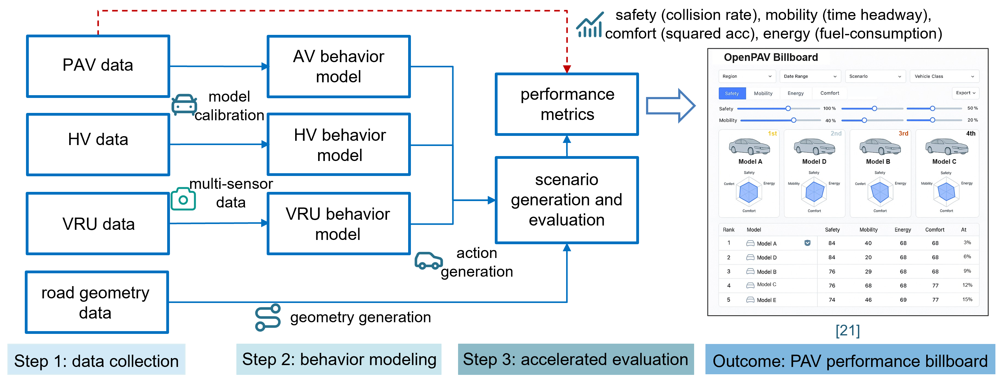
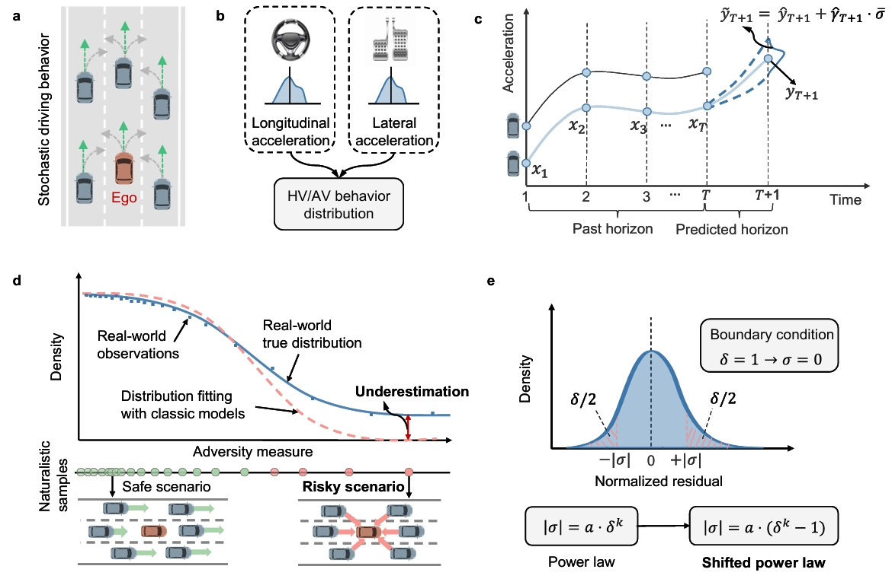
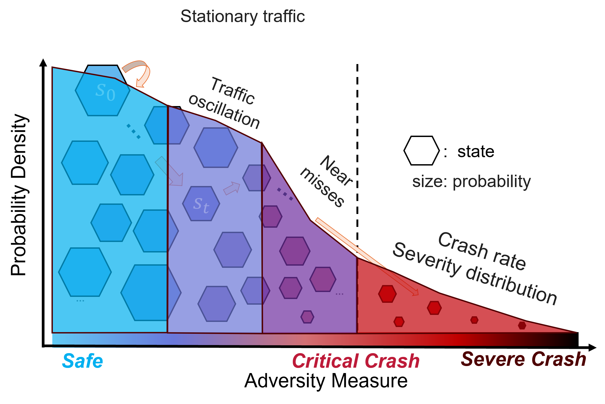

Method
Data-driven PAV evaluation pipeline with accelerated testing and benchmark ranking outputs.
Evaluation Pipeline
Since PAV manufacturers often do not disclose internal control algorithms, OpenPAV proposes a data-driven pipeline for performance evaluation based on PAV-related data. This framework enables benchmarking without relying on proprietary AV controllers.

- Step 1 - Data Collection: OpenPAV invites data providers to submit PAV-related datasets, especially those corresponding to the evaluated PAV models. Supporting inputs for simulation, such as HV trajectories, VRU data, and road geometry, can be collected from public datasets or partner platforms.
- Step 2 - Behavior Modeling: With these datasets, surrogate behavior models are developed to learn and mimic the behaviors of all traffic participants from raw data. These models provide the basis for constructing realistic traffic simulations.
- Step 3 - Accelerated evaluation: The system generates scenarios tailored to specific performance metrics and runs accelerated tests to compute statistical results. When data volume becomes sufficiently large, some scenario indicators can be extracted directly from data rather than relying only on extensive modeling and simulation.
The final outcome is four independent performance rankings for safety, mobility, user comfort, and fuel-use proxy. Rank 1 is best in each dimension; no composite score or overall rank is calculated. The current results evaluate eight calibrated vehicle models in generated single-lane ACC car-following scenarios as a demonstration of the platform workflow, not a comprehensive real-world ranking of vehicle models or brands. The fuel-use proxy is the mean rate predicted by a common hypothetical VT-Micro model applied to all trajectories; it does not represent actual vehicle energy use or Tesla electricity consumption.
Download full pipeline code package:
Full Pipline CodeShifted Power Law Behavior Model
When performing stochastic trajectory prediction, many neural network-based approaches can accurately predict mean behavior, but few methods explicitly model the full stochastic distribution. Typical formulations often assume a Gaussian distribution, which can lead to limited performance in risky or highly adversarial scenarios.
To reduce the modeling gap in the tail distribution of vehicle behaviors, we develop a simple shifted power law model that can represent risky driving behaviors using limited data. Results show that this model predicts both longitudinal and lateral acceleration accurately in the tail region, improving evaluation performance in rare but safety-critical conditions.

Reference: Chen, W., Huang, H., Ma, K., Li, H., Liang, S., Zhou, H., Li, X. (2025). Unveiling uniform shifted power law in stochastic human and autonomous driving behavior. arXiv preprint arXiv:2511.00659.
Download behavior modeling code package:
Behavior Modeling CodeState-Based Evaluation
In our previous study, we proposed a Markov state-based evaluation framework to efficiently analyze a PAV's life-cycle performance. The PAV driving process is modeled as a Markov decision process, and the stochastic behavior models extracted from Step 2 are used to define transition probabilities between states. Under Markov chain theory, the stationary distribution represents long-term system behavior, so the metric distributions under that stationary distribution can represent the overall performance level of a given PAV model.
Because the number of driving states is extremely large, directly computing stationary distributions over all states is computationally infeasible. To address this, we apply state space aggregation: original states are partitioned into a smaller number of blocks based on performance metrics. We then compute stationary distributions over aggregated blocks instead of all individual states, which substantially reduces dimensionality and computational cost.

Reference: Ma, Chengyuan and Zhou, Hang and Zhou, Yang and Li, Xiaopeng, Safety Evaluation of Automated Vehicles Using Markov Chain Aggregation (September 07, 2026). Available at SSRN: https://papers.ssrn.com/sol3/papers.cfm?abstract_id=7432498.
Download evaluation code package:
Evaluation CodeUpload Methods and Code
For code submissions, please contact Technical Contributor Hang Zhou (hzhou364@wisc.edu).